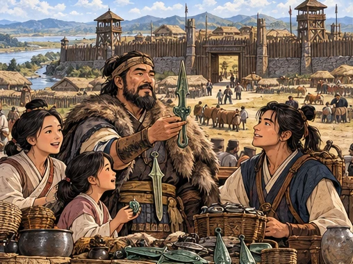
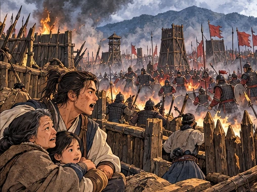
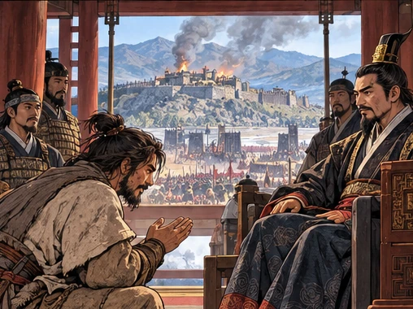
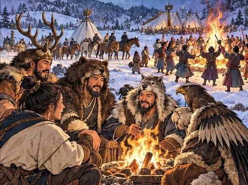
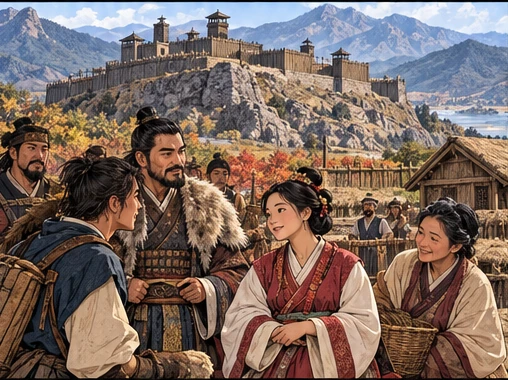
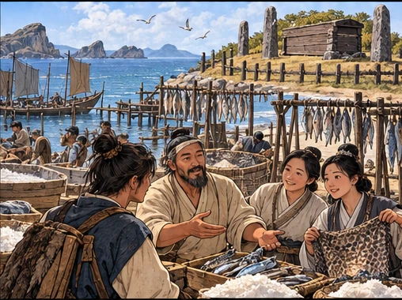
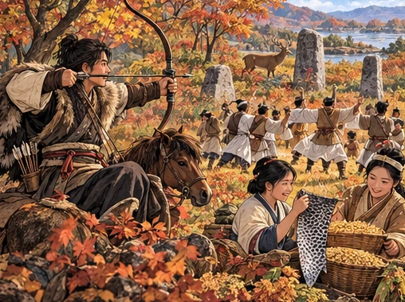
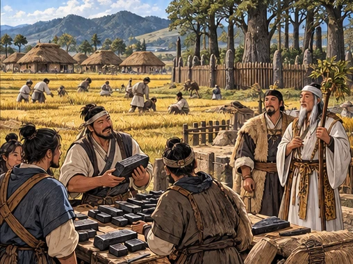

고조선과 여러 나라
한 나라의 흥망 뒤에도, 지역마다 다른 삶이 이어졌다.
- 두 흐름 ① 고조선은 건국에서 멸망까지 순서대로, ② 여러 나라는 차례로 이어진 나라가 아니라 지역마다 나란히 있던 나라라 북쪽부터 남쪽으로 비교해요.
- 컷마다 나라 → 그림 → 대화 → 설명 → 꼭 기억을 읽어요. 강의가 직접 짚은 말은 ‘강의 강조’로 표시해요.
- 흐름이 끊기는 곳마다 ‘이 부분에서 외울 것’으로 나라별 단서를 이어서 정리해요.
① 고조선
단군왕검이 세웠다고 전해지는 고조선은 범금 8조로 질서를 지켰고, 연의 공격과 위만의 집권을 거쳐 우거왕 때 한 무제의 공격으로 무너졌다.
첫 나라의 이야기
고조선 · 단군왕검이 세웠다는 건국 이야기 · 수도 왕검성

개념 그림 · 실제 인물의 초상이나 유적 사진이 아니에요.
학습용 요약 대화 · 실제 발언을 그대로 옮긴 것이 아니에요. ‘해설’은 오늘날의 풀이예요.
상인 · 설명용 인물우리 마을은 왕검성으로 물건을 보냅니다.
동료 · 설명용 인물단군왕검이 세운 나라라는 이야기가 전해지지.
- 건국고조선은 단군왕검이 세웠다고 전해지는 우리나라 최초의 국가다.
- 수도고조선의 수도는 왕검성이었다.
- 관직왕 아래에 상·대부·장군 같은 관직을 두었다.
고조선 = 단군왕검 건국 전승·왕검성
나라를 세운 이야기와 법
고조선 · 범금 8조(8조법) · 단군 건국 이야기
개념 그림 · 실제 인물의 초상이나 유적 사진이 아니에요.
그림: ‘첫 나라의 이야기’ 장면과 같은 그림 전체를 확대하지 않고 다시 썼어요.
학습용 요약 대화 · 실제 발언을 그대로 옮긴 것이 아니에요. ‘해설’은 오늘날의 풀이예요.
마을 어른 · 설명용 인물범금 8조로 생명과 재산을 지키지.
해설 · 오늘날의 풀이단군 건국 이야기에서 홍익인간과 제정일치를 읽을 수 있어요.
- 법사회 질서를 유지하기 위해 범금 8조를 두었다.
- 내용사람을 죽인 자는 사형에 처하고, 상처를 입힌 자는 곡식으로 갚게 하고, 도둑질한 자는 노비로 삼았다.
- 의미범금 8조로 보아 생명과 노동력, 사유 재산을 중시한 사회였다.
- 이야기단군 건국 이야기에는 홍익인간과 제정일치의 모습이 담겨 있다.
단군 건국 이야기 = 홍익인간·제정일치 / 범금 8조 = 생명·노동력·사유 재산 중시
강의 강조고조선에서 제일 시험에 잘 나오고 제일 중요한 것은 “사회 질서를 유지하기 위해 범금 8조를 두었다”라고 짚었어요.
국경에 닥친 전쟁
고조선 · 연(중국)의 장수 진개의 공격

개념 그림 · 실제 인물의 초상이나 유적 사진이 아니에요.
학습용 요약 대화 · 실제 발언을 그대로 옮긴 것이 아니에요. ‘해설’은 오늘날의 풀이예요.
전령 · 설명용 인물연의 장수 진개가 공격해 옵니다!
주민 · 설명용 인물서쪽 땅을 지켜야 해요.
- 배경고조선은 이웃한 중국의 연나라와 맞서고 있었다.
- 전개연나라의 장수 진개가 고조선을 공격해 왔다.
- 결과이를 통해 고조선이 중국 세력과 대립했음을 알 수 있다.
- 구분진개는 연나라의 장수이고, 뒤에 고조선을 멸망시킨 것은 한나라의 무제다. 서로 다른 나라, 다른 때의 공격이다.
고조선 = 연 장수 진개의 침략
왕위가 바뀌다
고조선 · 위만이 준왕을 몰아냄 → 위만 조선

개념 그림 · 실제 인물의 초상이나 유적 사진이 아니에요.
학습용 요약 대화 · 실제 발언을 그대로 옮긴 것이 아니에요. ‘해설’은 오늘날의 풀이예요.
준왕위만에게 서쪽 국경을 맡겨도 되겠소?
위만그곳에서 세력을 키우겠습니다.
- 배경준왕은 중국에서 넘어온 위만에게 서쪽 국경 지역을 맡겼다.
- 전개그곳에서 세력을 키운 위만은 준왕을 몰아내고 왕이 되었다.
- 결과이때부터를 위만 조선이라 부른다.
위만이 준왕을 몰아냄 → 진번·임둔 복속 → 우거왕 때 한 무제 침략·왕검성 함락
철기와 중계 무역
위만 조선 · 철기 문화 · 진번·임둔 복속 · 중계 무역 → 우거왕 때 한 무제의 공격
개념 그림 · 실제 인물의 초상이나 유적 사진이 아니에요.
그림: ‘왕위가 바뀌다’ 장면과 같은 그림 전체를 확대하지 않고 다시 썼어요.
학습용 요약 대화 · 실제 발언을 그대로 옮긴 것이 아니에요. ‘해설’은 오늘날의 풀이예요.
신하 · 설명용 인물위만 이후 철기 문화가 더 퍼졌습니다.
위만중국과 진 사이 중계 무역으로 이익을 얻자.
- 배경위만 조선은 철기 문화를 받아들여 힘을 키웠다.
- 전개진번과 임둔을 복속해 영토를 넓히고, 중국과 한반도 남쪽의 진 사이에서 중계 무역으로 이익을 얻었다.
- 멸망우거왕 때 한 무제의 공격으로 수도 왕검성이 함락되어 고조선이 멸망했다.
- 그 뒤한나라는 고조선 지역을 다스리려고 한사군이라 불리는 군현을 설치했다.
위만 조선 = 철기 문화 수용·진번·임둔 복속·중국과 진 사이 중계 무역 → 우거왕 때 한 무제 공격·왕검성 함락
강의 강조진번과 임둔을 복속시켰다는 표현이 나와도 고조선이라고 짚었어요.
② 여러 나라 (지역별로 나란히)
고조선에 이어 여러 나라를 본다. 차례로 이어진 나라가 아니라 지역마다 나란히 있던 나라들이라, 북쪽 부여부터 남쪽 삼한까지 지역별로 비교한다.
북쪽 넓은 들판의 부여
부여 · 연맹 왕국 · 사출도 · 영고(12월)

개념 그림 · 실제 인물의 초상이나 유적 사진이 아니에요.
학습용 요약 대화 · 실제 발언을 그대로 옮긴 것이 아니에요. ‘해설’은 오늘날의 풀이예요.
부여 사람 · 설명용 인물마가와 우가가 각자 사출도를 맡아요.
동료 · 설명용 인물12월 영고도 곧 시작이군요!
- 정치왕 아래 마가·우가·저가·구가가 각자 사출도를 다스려, 왕권이 강하지 않았다.
- 제천12월에 영고라는 제천 행사를 열었다.
- 법·풍습도둑질하면 12배로 갚게 하는 1책 12법과 소의 굽으로 길흉을 점치는 우제점법이 있었다.
부여 = 사출도·영고(12월)·1책 12법·우제점법
강의 강조부여에서 제일 시험에 잘 나오는 것은 사출도라고 짚었어요.
산성 아래의 고구려
고구려 · 5부 연맹 · 제가회의 · 동맹(10월) · 서옥제

개념 그림 · 실제 인물의 초상이나 유적 사진이 아니에요.
학습용 요약 대화 · 실제 발언을 그대로 옮긴 것이 아니에요. ‘해설’은 오늘날의 풀이예요.
청년 · 설명용 인물혼인하면 신부 집 뒤에 서옥을 짓는대.
동료 · 설명용 인물제가회의에선 나라 일도 의논하지.
- 정치계루부·소노부 등 5부의 연맹체로, 귀족 회의인 제가회의에서 나라의 중대사를 정했다.
- 관직왕 아래 상가·대로·패자 같은 관직이 있었고, 대가들은 사자·조의·선인을 거느렸다.
- 제천10월에 동맹이라는 제천 행사를 열었다.
- 혼인혼인한 뒤 남자가 여자 집 뒤에 서옥을 짓고 살다가 자식이 자라면 함께 남자 집으로 돌아가는 서옥제가 있었다.
고구려 = 계루부·제가회의·서옥제·동맹(10월)
강의 강조고구려는 동맹 · 제가회의 · 서옥제 세 가지를 기억하라고 짚었어요.
바닷가의 옥저
옥저 · 소금·해산물 · 민며느리제 · 골장제

개념 그림 · 실제 인물의 초상이나 유적 사진이 아니에요.
학습용 요약 대화 · 실제 발언을 그대로 옮긴 것이 아니에요. ‘해설’은 오늘날의 풀이예요.
옥저 사람 · 설명용 인물소금과 해산물을 다른 나라에 팔아.
동료 · 설명용 인물민며느리제와 골장제도 우리 풍습이지.
- 경제동해안에 있어 소금과 해산물이 특산물이었다.
- 혼인여자아이를 남자 집에서 데려다 키우고, 성인이 되면 남자 집이 여자 집에 예물을 주고 혼인하는 민며느리제가 있었다.
- 장례시신을 임시로 묻었다가 뼈만 추려 온 가족의 뼈를 하나의 곽에 안치하는 골장제(가족 공동 무덤)가 있었다.
옥저 = 소금·해산물·민며느리제·골장제
강의 강조옥저는 민며느리제와 골장제가 중요하다고 짚었어요.
왕 대신 읍군·삼로가
옥저·동예 공통 · 군장 국가 · 읍군·삼로
개념 그림 · 실제 인물의 초상이나 유적 사진이 아니에요.
그림: ‘바닷가의 옥저’ 장면과 같은 그림 전체를 확대하지 않고 다시 썼어요.
학습용 요약 대화 · 실제 발언을 그대로 옮긴 것이 아니에요. ‘해설’은 오늘날의 풀이예요.
바닷가 사람 · 설명용 인물우리 마을은 왕 없이 읍군·삼로가 이끌어요.
여행자 · 설명용 인물옥저도 동예도 그 점은 같군요.
- 정치옥저와 동예에는 왕이 없고, 읍군·삼로라는 군장이 읍락을 다스렸다.
- 구분다스리는 방식은 같아도 풍습은 다르다. 민며느리제·골장제는 옥저, 책화·무천은 동예다.
옥저·동예 공통 = 왕 없이 읍군·삼로가 지배 / 풍습은 서로 다름
경계를 지키는 동예
동예 · 책화 · 무천(10월) · 단궁·과하마·반어피

개념 그림 · 실제 인물의 초상이나 유적 사진이 아니에요.
학습용 요약 대화 · 실제 발언을 그대로 옮긴 것이 아니에요. ‘해설’은 오늘날의 풀이예요.
동예 사람 · 설명용 인물저 산을 함부로 넘으면 책화로 배상해요.
여행자 · 설명용 인물무천 날엔 함께 춤추겠군요.
- 사회읍락 사이의 경계를 중시해, 다른 읍락을 침범하면 노비나 소·말로 갚게 하는 책화가 있었다.
- 제천10월에 무천이라는 제천 행사를 열고 밤낮으로 음주가무를 즐겼다.
- 특산물특산물로 단궁(활), 과하마(작은 말), 반어피(바다표범 가죽)가 유명했다.
동예 = 책화·무천(10월)·단궁·과하마·반어피
강의 강조동예에서는 책화가 제일 중요하다고 짚었어요.
철과 벼가 자라는 삼한
삼한(마한·진한·변한) · 제정 분리 · 벼농사 · 변한의 철

개념 그림 · 실제 인물의 초상이나 유적 사진이 아니에요.
학습용 요약 대화 · 실제 발언을 그대로 옮긴 것이 아니에요. ‘해설’은 오늘날의 풀이예요.
상인 · 설명용 인물변한의 덩이쇠를 낙랑에 팔러 갑니다.
제사장 · 설명용 인물소도의 제사는 천군이 맡지요.
- 정치정치 지도자는 신지·읍차, 제사장은 천군으로, 정치와 제사가 나뉜 제정 분리 사회였다.
- 소도천군이 다스리는 신성 지역 소도에는 죄인이 달아나도 함부로 들어가 잡을 수 없었다.
- 경제남쪽이라 벼농사가 발달했고, 변한은 철을 생산해 덩이쇠를 낙랑에 수출했다.
삼한 = 벼농사·변한 철·천군·소도·신지·읍차
강의 강조시험 선택지에 소도가 보이면 삼한이라고 짚었어요.
5월과 10월의 계절 제사
삼한 · 5월(씨뿌리기 뒤) · 10월(농사 마친 뒤) 계절제
개념 그림 · 실제 인물의 초상이나 유적 사진이 아니에요.
그림: ‘철과 벼가 자라는 삼한’ 장면과 같은 그림 전체를 확대하지 않고 다시 썼어요.
학습용 요약 대화 · 실제 발언을 그대로 옮긴 것이 아니에요. ‘해설’은 오늘날의 풀이예요.
천군 · 설명용 인물5월과 10월, 계절마다 제사를 올리자.
신지 · 설명용 인물정치는 신지·읍차가, 제사는 천군이 맡지요.
- 제사씨뿌리기가 끝난 5월과 농사를 마친 10월에 계절마다 제사를 지냈다.
- 구분정치는 신지·읍차가, 제사는 천군이 소도에서 맡았다.
삼한 = 정치(신지·읍차)와 제사(천군·소도) 분리 / 5월·10월 계절 제사
고조선: 단군왕검 건국 → 연 장수 진개의 공격 → 위만 → 진번·임둔 복속 → 우거왕 때 한 무제 공격·멸망
여러 나라(나란히): 부여 사출도·영고 · 고구려 제가회의·동맹·서옥제 · 옥저 민며느리제·골장제 · 동예 책화·무천 · 삼한 천군·소도
다 읽었다면 퀴즈로 확인하기 →